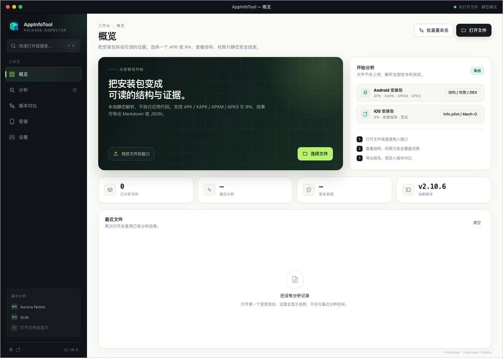
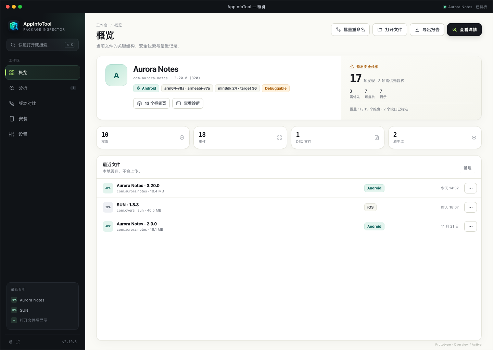
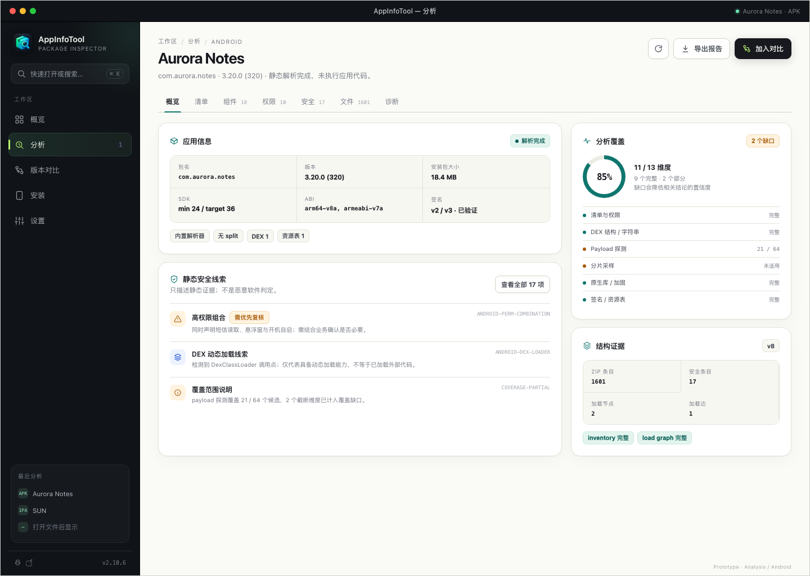
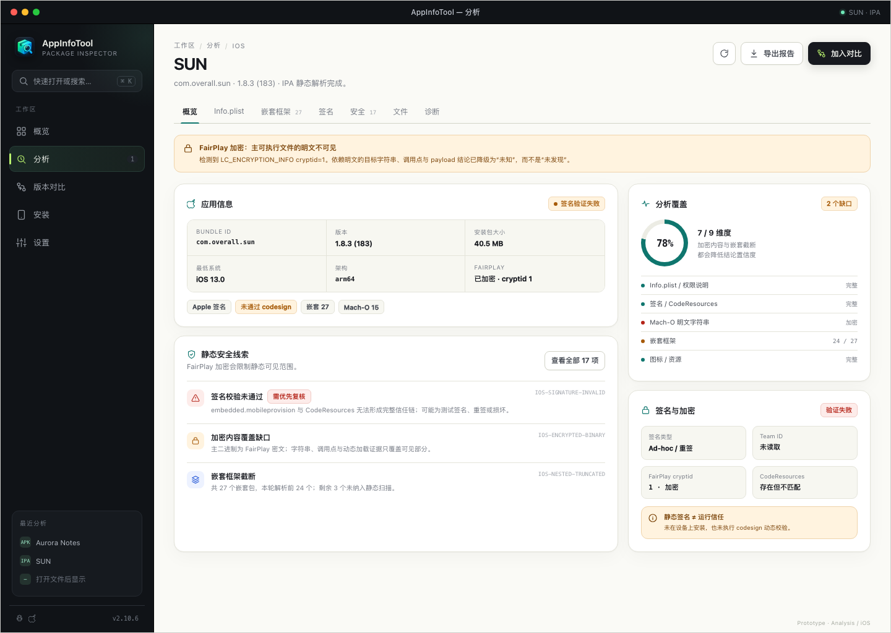
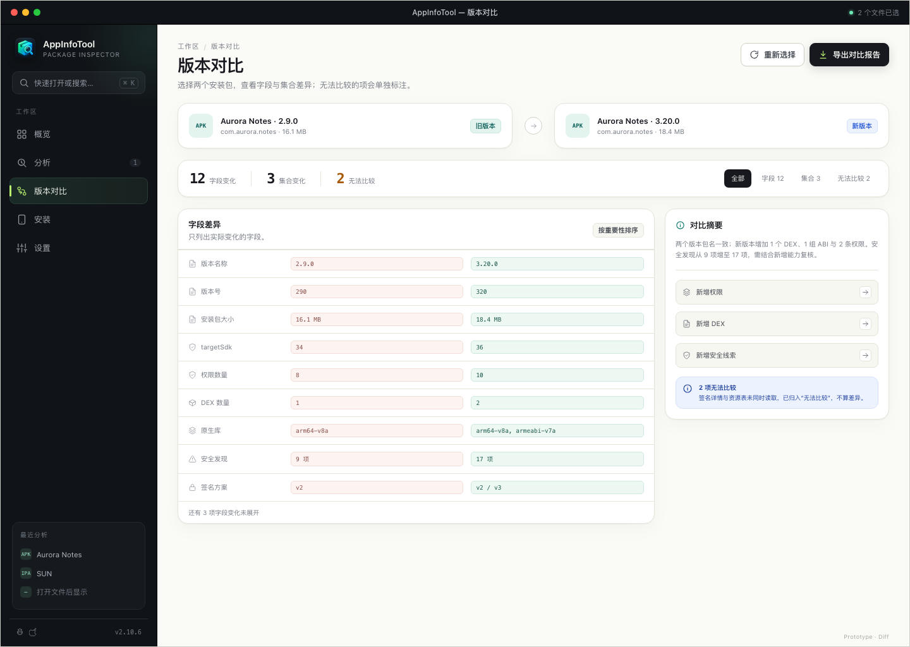
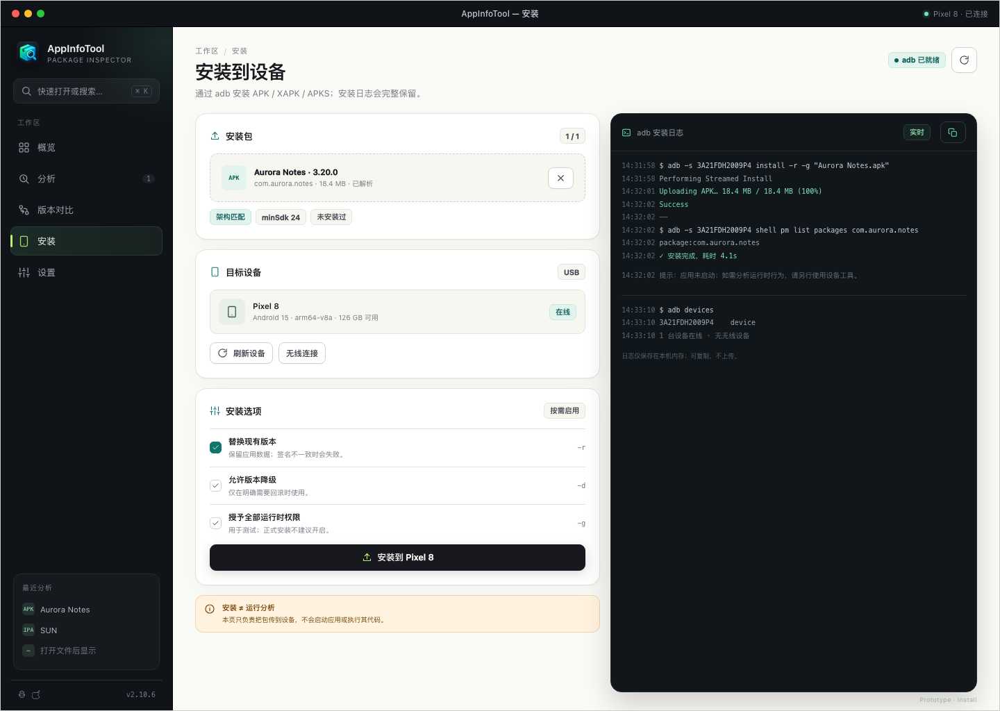
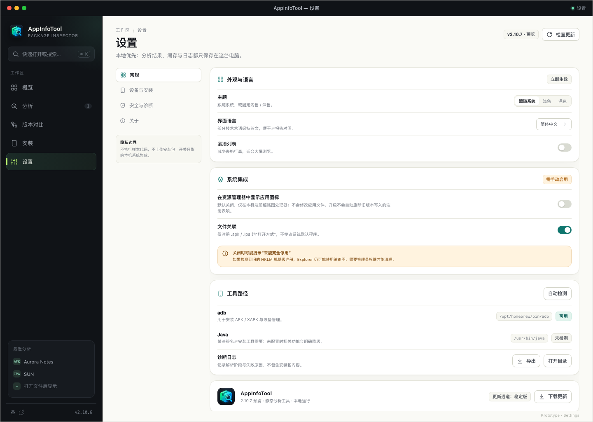
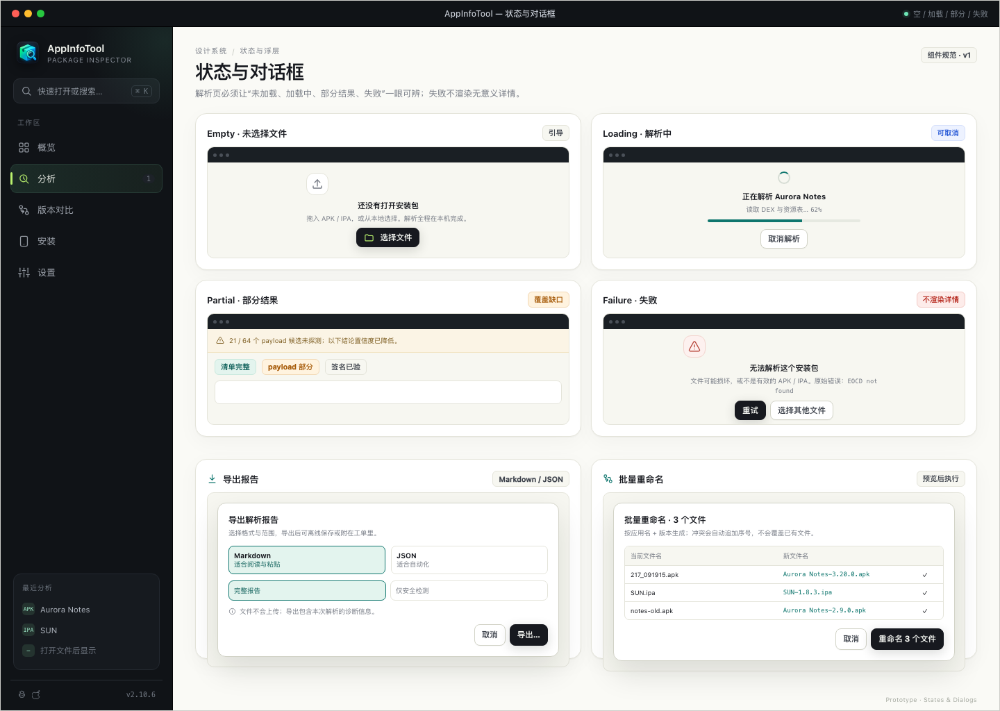

一套面向“安装包检查”的界面语言：暖白工作台、石墨侧栏、青色证据强调。目标不是装饰，而是让结构、覆盖范围和安全发现更快被读懂。

把“开始分析”做成明确的下一步：拖入、选择、理解支持格式。

当前文件、安全发现、结构与最近记录集中在一屏。

证据优先：覆盖环、静态线索、Artifact / Load Graph 结构证据。

FairPlay 加密、签名失败与嵌套截断在同一视线高度内被解释。

字段、集合、无法比较三类差异分开表达，避免“未知=变化”。

设备、选项、日志并排；安装与运行分析明确分离。

默认关闭系统集成；权限、隐私边界与失败状态说清楚。

Empty / Loading / Partial / Failure 与导出、批量重命名对话框。